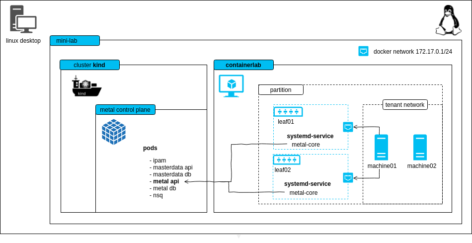

mini-lab
The mini-lab is a small, virtual setup to locally run the metal-stack. It deploys the metal control plane and a metal-stack partition with two simulated leaf switches. The lab can be used for trying out metal-stack, demonstration purposes or development.

ℹ This project can also be used as a template for writing your own metal-stack deployments.
<!– TOC depthfrom:2 depthto:6 withlinks:true updateonsave:false orderedlist:false –>
<!– /TOC –>
Requirements
- Linux machine with hardware virtualization support
- kvm as hypervisor for the VMs (you can check through the
kvm-okcommand) - docker >= 20.10.13 (for using kind and our deployment base image)
- kind == v0.20.0 (for hosting the metal control plane)
- containerlab >= v0.47.1
- the lab creates a docker network on your host machine (
172.17.0.1), this hopefully does not overlap with other networks you have - (recommended) haveged to have enough random entropy (only needed if the PXE process does not work)
Here is some code that should help you to set up most of the requirements:
# If UFW enabled.
# Disable the firewall or allow traffic through Docker network IP range.
sudo ufw status
sudo ufw allow from 172.17.0.0/16
# Install kvm
sudo apt install -y git curl qemu qemu-kvm haveged
# Install Docker
curl -fsSL https://get.docker.com | sh
# if you want to be on the safe side, follow the original installation
# instructions at https://docs.docker.com/engine/install/ubuntu/
# Ensure that your user is member of the group "docker"
# you need to login again in order to make this change take effect
sudo usermod -G docker -a ${USER}
# Install containerlab
bash -c "$(curl -sL https://get.containerlab.dev)"
# Install kind (kubernetes in docker), for more details see https://kind.sigs.k8s.io/docs/user/quick-start/#installation
sudo curl -Lo /usr/local/bin/kind "https://kind.sigs.k8s.io/dl/v0.20.0/kind-linux-amd64"
sudo chmod +x /usr/local/bin/kind
The following ports are used statically on your host machine:
| Port | Bind Address | Description |
|:----:|:------------ |:---------------------------------- |
| 6443 | 0.0.0.0 | kube-apiserver of the kind cluster |
| 4443 | 0.0.0.0 | HTTPS ingress |
| 4150 | 0.0.0.0 | nsqd |
| 8080 | 0.0.0.0 | HTTP ingress |
## Known Limitations
- to keep the demo small there is no EVPN
- machine restart and destroy does not work because we cannot change the boot order via IPMI in the lab easily (virtual-bmc could, but it's buggy)
- login to the machines is possible with virsh console, login to the firewall is possible with SSH from your local machine
## Try it out
bash git clone https://github.com/metal-stack/mini-lab.git cd mini-lab
Start the mini-lab with a kind cluster, a metal-api instance as well as two containers wrapping leaf switches and another container that hosts two user-allocatable machines:
bash make
containerlab will ask you for root permissions (https://github.com/srl-labs/containerlab/issues/669)
After the deployment and waiting for a short amount of time, two machines in status `PXE booting` become visible through `metalctl machine ls`:
bash docker compose run –rm metalctl machine ls
ID LAST EVENT WHEN AGE HOSTNAME PROJECT SIZE IMAGE PARTITION e0ab02d2-27cd-5a5e-8efc-080ba80cf258 PXE Booting 3s 2294c949-88f6-5390-8154-fa53d93a3313 PXE Booting 5s
Wait until the machines reach the waiting state:
bash docker compose run –rm metalctl machine ls
ID LAST EVENT WHEN AGE HOSTNAME PROJECT SIZE IMAGE PARTITION e0ab02d2-27cd-5a5e-8efc-080ba80cf258 Waiting 8s v1-small-x86 mini-lab 2294c949-88f6-5390-8154-fa53d93a3313 Waiting 8s v1-small-x86 mini-lab
Create a firewall and a machine with:
bash make firewall make machine
__Alternatively__, you may want to issue the `metalctl` commands on your own:
bash docker compose run –rm metalctl network allocate
–partition mini-lab
–project 00000000-0000-0000-0000-000000000000
–name user-private-network
lookup the network ID and create a machine
docker compose run –rm metalctl machine create
–description test
–name machine
–hostname machine
–project 00000000-0000-0000-0000-000000000000
–partition mini-lab
–image ubuntu-20.04
–size v1-small-x86
–networks <network-ID>
create a firewall that is also connected to the virtual internet-mini-lab network
docker compose run –rm metalctl machine create
–description fw
–name fw
–hostname fw
–project 00000000-0000-0000-0000-000000000000
–partition mini-lab
–image firewall-ubuntu-2.0
–size v1-small-x86
–networks internet-mini-lab,privatenet
See the installation process in action
bash make console-machine01/02 ... Ubuntu 20.04 machine ttyS0
machine login:
Two machines are now installed and have status "Phoned Home"
bash docker compose run –rm metalctl machine ls ID LAST EVENT WHEN AGE HOSTNAME PROJECT SIZE IMAGE PARTITION e0ab02d2-27cd-5a5e-8efc-080ba80cf258 Phoned Home 2s 21s machine 00000000-0000-0000-0000-000000000000 v1-small-x86 Ubuntu 20.04 20200331 mini-lab 2294c949-88f6-5390-8154-fa53d93a3313 Phoned Home 8s 18s fw 00000000-0000-0000-0000-000000000000 v1-small-x86 Firewall 2 Ubuntu 20200730 mini-lab
Login with user name metal and the console password from
bash docker compose run –rm metalctl machine consolepassword e0ab02d2-27cd-5a5e-8efc-080ba80cf258
If you want to access the firewall with SSH or have internet connectivity from the firewall and machine, you'll need to have a static route configured that points to the leaf switches:
bash
Add the route to the network internet-mini-lab 100.255.254.0/24 via leaf01 and leaf02, whose IPs are dynamically allocated. Make sure there's no old route before execution.
make route
Connect to the firewall
ssh metal@100.255.254.1
To remove the kind cluster, the switches and machines, run:
bash make cleanup
### Reinstall machine
Reinstall a machine with
bash docker compose run –rm metalctl machine reinstall
–image ubuntu-20.04
e0ab02d2-27cd-5a5e-8efc-080ba80cf258
### Free machine
Free a machine with `make free-machine01` or
bash docker compose run –rm metalctl machine rm e0ab02d2-27cd-5a5e-8efc-080ba80cf258
## Flavors
There's few versions of mini-lab environment that you can run. We call them flavors. There's 2 flavors at the moment:
- `default` -- runs 2 machines.
- `cluster-api` -- runs 3 machines. Useful for testing Control plane and worker node deployment with [Cluster API provider](https://github.com/metal-stack/cluster-api-provider-metalstack).
- `sonic` -- use SONiC as network operating system for the leaves
In order to start specific flavor, you can define the flavor as follows:
bash export MINILABFLAVOR=cluster-api make
## Page Tree
@contents Pages = vcat([[joinpath(root, file)[length(@DIR)+2:end] for file in files] for (root, dirs, files) in walkdir(@DIR)]...) ```